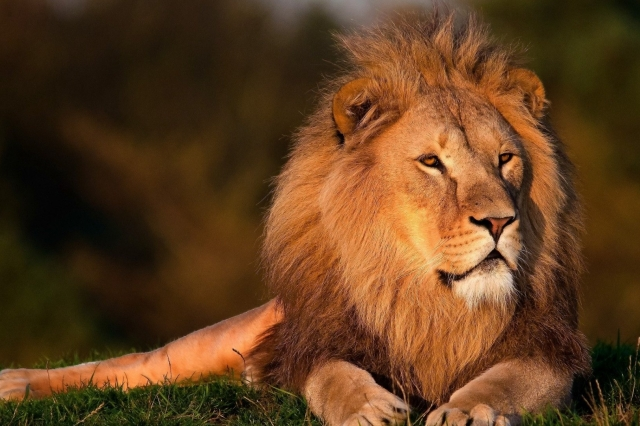

| ライオンとは |
哺乳綱食肉目ネコ科ヒョウ属に分類される食肉類。別名はシシ（獅子）。
世界的に「百獣の王」として有名であり、一般的に最も強い動物であると思われています。
実際に全ての動物の中で国獣として選ばれる数はライオンが最も多く、古くはラスコー洞窟やショーヴェ洞窟の洞窟画などがあります。 |
| アンサー① |
哺乳綱食肉目ネコ科( ヒョウ ） )属に分類される食肉類の動物です。 |
|
|
更新世末期、約1万年前までライオンはヒトに次いで広く分布する大型陸上哺乳類でした。
|
| アンサー② |
獅子とも呼ばれ、ネコ科では( トラ )に次いで2番目に大きな種です。 |
|
|
オスは体重は250キログラムを超えることもあり、ネコ科ではトラに次いで2番目に大きな種です。
|
| アンサー③ |
オスの外見は( たてがみ )が特徴的であり、様々なシンボルとなっています。 |
|
|
野生下では南アフリカ共和国の南部および東部で、標高1,000メートル以上の環境に生息する個体群でたてがみが発達する傾向があります。
|
| アンサー④ |
狩りの時間は( 夜間 )が主で、メスが集団で行います。喉に噛みつき窒息死させます。 |
|
|
メスが扇形に散開しながら獲物に忍び寄ります。捕らえた獲物は主にオスが独占します。
|
| アンサー⑤ |
一回の交尾は( 約20秒 )で、一日に50回以上交尾を行うこともあります。 |
|
|
メスは同じ群れの幼獣を一緒に育て、自分が産んだ幼獣以外にも授乳します。
幼獣は獲物が少ないと育児放棄されることもあるため、他の肉食獣に捕食されることもあります。
|
| アンサー⑥ |
ネコやイヌのように（ 喉を鳴らす ）ことでコミュニケーションを行います。 |
|
|
叫び声をだすときは、まずとても低い声からはじめゆっくりと吠え、最後に何度か短く唸ることが多いです。。
8km先からも聞こえるほど大きな叫び声を出します。これは、自分の存在を誇示しているのです。
|